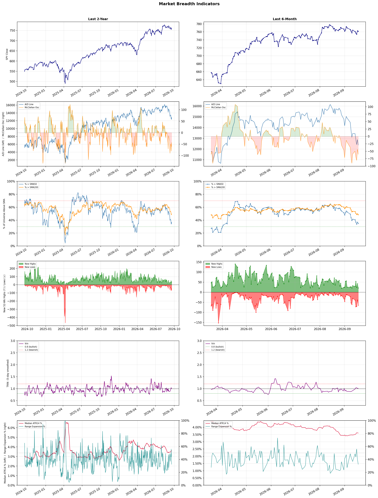

A daily market breadth and sector rotation report for active investors
| Item | Read |
|---|---|
| Regime | Defensive |
| Risk posture | Defensive |
| Universe | 1,325 stocks tracked · 21 new 52-week highs · 30 active swing setups |
| Breadth | only 34.8% of tracked stocks are above SMA50, new lows exceed new highs (64 vs 21), McClellan oscillator (breadth momentum) is negative at -60.3 |
| Leadership | Oil & Gas Refining & Marketing, Diagnostics & Research, and Steel |
| Weakest groups | Chemicals, Resorts & Casinos, and Footwear & Accessories |
Use this report to prioritize research and chart review; validate entries, stops, liquidity, earnings, and risk before acting.
| Item | Read |
|---|---|
| Primary read | Defensive regime with Defensive risk posture. |
| Research queue | DINO, MPC, VLO, PSX, UGP |
| Leadership focus | Oil & Gas Refining & Marketing, Diagnostics & Research, and Steel |
| Caution list | Chemicals, Resorts & Casinos, and Footwear & Accessories |
| Review prompt | Check extension risk, chart location, fundamentals, valuation, and earnings before using any research row. |
| Item | Read |
|---|---|
| Primary read | 4 active risk warnings; use screen output as watchlist input only. |
| Bullish screens | MPC, VLO, NEO, NTRA, HTFL |
| Bearish screens | GRAB, SRAD, AON, SPRY, YELP |
| Alerts / levels | Automated trigger, stop, ATR, liquidity, reward/risk, and event-risk levels are pending future enrichment. |
| Review prompt | Open the linked chart, define trigger and invalidation, then check liquidity and event risk independently. |
Risk Posture: Defensive — screen backdrop favors caution; require independent risk review before new exposure
Metric context: McClellan below -50 = elevated selling pressure; below -100 = washout territory. Range Expansion = share of stocks with daily range above their 20-day average. Signal Density = share of tracked names appearing in signal screens.
| Breadth Date | % > SMA50 | % > SMA200 | New Highs | New Lows | McClellan | Median Range | Avg Range | Median ATR14 | Range Expansion | Signal Density |
|---|---|---|---|---|---|---|---|---|---|---|
| 2026-09-18 | 34.8% | 48.3% | 21 | 64 | -60.3 | 2.6% | 3.2% | 3.6% | 32.4% | 4.7% |

Prior comparison date: September 17, 2026
| Metric | Prior | Current | Change |
|---|---|---|---|
| Regime | Defensive | Defensive | unchanged |
| Risk Posture | Defensive | Defensive | unchanged |
| % > SMA50 | 36.8% | 34.8% | -2.0 pts |
| % > SMA200 | 49.7% | 48.3% | -1.4 pts |
| New Highs | 41 | 21 | -20 |
| New Lows | 40 | 64 | -24 |
Top-10 industries entering: Capital Markets, Computer Hardware, and Insurance - Life. Top-10 industries leaving: Agricultural Inputs, Banks - Diversified, and Gold. New multi-signal long setups: ARM, CMPS, COHU, HALO, HTFL, KEEL, MU, NAT, NTRA. New multi-signal short setups: FLO.
| Status | Tickers | Read |
|---|---|---|
| Added | ARM, CMPS, COHU, DOCN, FLO, HALO, HTFL, KEEL | New technical screen matches vs prior report. |
| Removed | ALHC, AVTR, BILI, CMBT, DELL, DINO, DT, FERG | No longer present in today's technical screen matches. |
| Still Active | AON, FIS, GRAB, MPC, MXL, NEO, NEOG, TH | Appeared in both current and prior reports. |
| Promoted | none | Model Screen Score improved by at least 15 points. |
| Downgraded | none | Model Screen Score declined by at least 15 points. |
| Direction | Industry | ETF | Prior Rank | Current Rank | Days | Rank Change |
|---|---|---|---|---|---|---|
| Rose | Agricultural Inputs | N/A | 84 | 15 | 35 | +69 |
| Rose | Steel | SLX | 71 | 3 | 28 | +68 |
| Rose | Capital Markets | KCE | 70 | 9 | 42 | +61 |
| Rose | Oil & Gas Equipment & Services | XES | 81 | 28 | 42 | +53 |
| Rose | Semiconductors | SOXX | 74 | 25 | 42 | +49 |
Bull: The Agricultural Inputs sector is gaining relative strength due to a confluence of factors, including the anticipation of increased demand for agricultural products driven by favorable market conditions highlighted in recent headlines. The mention of "Best Agriculture Stocks to Buy in 2026" and "7 Agricultural Stocks and ETFs to Buy and Hold" indicates strong investor sentiment and confidence in long-term growth prospects, while the focus on navigating a "Super El Niño" suggests that weather patterns could lead to heightened demand for resilient agricultural inputs. Additionally, the broader rise in the Basic Materials sector, despite underperforming, signals an opportunity for agricultural inputs to capitalize on improving fundamentals in the chemicals and agriculture space.
Bear: While the Agricultural Inputs sector may currently exhibit rising relative strength, this could be misleading given the cyclical nature of agricultural markets and the potential for overvaluation. The optimism surrounding increased demand due to favorable weather patterns like "Super El Niño" may be short-lived, as such phenomena can also lead to unpredictable crop yields and supply chain disruptions. Furthermore, the broader Basic Materials sector's underperformance suggests that any gains in agricultural inputs could be limited, as economic headwinds such as rising input costs, inflation, and geopolitical tensions may dampen long-term growth prospects.
Verdict: The Agricultural Inputs sector is likely experiencing a rise due to anticipated increased demand for agricultural products driven by favorable market conditions and the potential impacts of "Super El Niño," which may necessitate more resilient inputs. However, investors should remain cautious of the cyclical nature of agricultural markets and the risk of overvaluation, as unpredictable weather patterns and economic headwinds like rising input costs and inflation could significantly hinder long-term growth prospects.
Sources: Google News
Bull: The steel industry, represented by the VanEck Steel ETF (SLX), is experiencing rising relative strength primarily due to robust demand driven by increased infrastructure spending and a surge in AI-related construction projects, as highlighted by the headline "AI Hunger Fuels VanEck Steel ETF (SLX): Is There More Room to Grow?" Additionally, the recent performance of major players like Nucor and Steel Dynamics, which are noted for their dominance in 2026, indicates strong operational efficiencies and profitability that are likely bolstering investor confidence in the sector, further evidenced by the SLX touching a new 52-week high.
Bear: While the steel industry may currently be experiencing rising relative strength and robust demand, several underlying headwinds could undermine this bullish outlook. Rising interest rates and inflationary pressures may lead to increased costs for steel production and infrastructure projects, potentially dampening demand. Additionally, the cyclical nature of the steel market means that any short-term gains could be fleeting, especially if economic conditions shift or if supply chain disruptions persist, which could negate the current optimism surrounding AI-related construction projects.
Verdict: The steel industry's rising relative strength, particularly through the VanEck Steel ETF (SLX), is fundamentally driven by robust demand from increased infrastructure spending and AI-related construction projects, alongside strong performance from major players like Nucor and Steel Dynamics. However, investors should remain cautious of the key risk posed by rising interest rates and inflation, which could elevate production costs and dampen demand, potentially undermining the current bullish momentum in the sector.
Sources: Yahoo Finance, Google News
Bull: The Capital Markets sector, represented by the SPDR S&P Capital Markets ETF (KCE), is experiencing rising relative strength due to a combination of favorable market conditions and investor sentiment. The recent headlines indicate a bullish outlook for the sector, particularly as J.P. Morgan highlights four stock sectors primed for growth, suggesting that capital markets are well-positioned to capitalize on economic recovery and increased trading activity. Additionally, the ongoing discussions around the Nasdaq stock outlook imply a positive sentiment on Wall Street, which can further bolster investor confidence in capital markets as they seek opportunities in a potentially bullish environment.
Bear: While the relative strength of the SPDR S&P Capital Markets ETF (KCE) may appear promising, several headwinds could undermine this bullish outlook. The recent decline in global AI stocks, coupled with calls from industry leaders for a slowdown in development, suggests a potential cooling of investor enthusiasm that could impact trading volumes and market activity. Additionally, the midterm elections often create uncertainty in the markets, which may lead to increased volatility and cautious investor sentiment, countering the notion of a robust recovery in the capital markets sector.
Verdict: The Capital Markets sector is likely experiencing upward momentum due to improving economic conditions and heightened investor confidence, driven by expectations of increased trading activity and growth opportunities as highlighted by J.P. Morgan. However, a key risk to this bullish outlook is the potential for decreased trading volumes and market volatility stemming from uncertainties related to the midterm elections and a cooling sentiment in the AI sector, which could dampen enthusiasm and impact overall market performance. Investors should remain vigilant and consider these factors when evaluating positions in the sector.
Sources: Yahoo Finance, Google News
Bull: The rising relative strength of the Oil & Gas Equipment & Services sector, as reflected in the ETF XES, is likely driven by a surge in oil prices, which is prompting increased capital expenditures in exploration and production activities. Recent headlines highlighting the performance of oil stocks and ETFs suggest that investors are seeking exposure to the sector without direct investment, indicating a growing confidence in the industry's recovery and profitability. Additionally, discussions around the best-performing ETFs and stocks in the energy sector reinforce the positive sentiment and potential for sustained growth in oilfield services amid favorable market conditions.
Bear: While the rising relative strength of the Oil & Gas Equipment & Services sector may appear promising, it is crucial to consider the underlying volatility of oil prices, which can be influenced by geopolitical tensions, regulatory changes, and shifts towards renewable energy. Additionally, the recent headlines may reflect short-term speculative interest rather than a sustainable recovery, as the industry's long-term fundamentals remain challenged by increasing environmental concerns and the global transition towards cleaner energy sources, which could dampen capital expenditures in the sector.
Verdict: The Oil & Gas Equipment & Services sector's rising relative strength is fundamentally driven by a resurgence in oil prices, leading to increased capital expenditures in exploration and production activities as companies respond to heightened demand. However, investors should remain cautious of the key risk posed by the inherent volatility of oil prices, influenced by geopolitical factors and the accelerating shift towards renewable energy, which may undermine the sector's long-term sustainability and profitability.
Sources: Yahoo Finance, Google News
Bull: The semiconductor industry is experiencing a rising relative strength primarily due to the increasing demand for advanced chip technologies across various sectors, including automotive and consumer electronics. Despite recent volatility, as indicated by the sharp selloff in some semiconductor stocks, companies like Lam Research and Applied Materials are showing resilience with significant gains, suggesting robust underlying demand for chip manufacturing equipment. Additionally, the bullish sentiment around lesser-known chip stocks, as highlighted in the headlines, reflects a broader market recognition of the sector's potential for growth, especially as stocks are viewed as fairly priced and poised for a rally.
Bear: While the bull thesis emphasizes rising demand for advanced chip technologies, it overlooks the significant volatility and recent selloffs in the semiconductor sector, which indicate underlying instability. The sharp declines in major players like Qualcomm and the Direxion Semiconductor Bull ETF suggest that investor sentiment is fragile, and the concentration risk highlighted in XLK's rebalance could further exacerbate the sector's vulnerability. Additionally, the notion of stocks being "fairly priced" may be misleading, as the market could be overestimating recovery potential in light of ongoing supply chain challenges and geopolitical tensions affecting semiconductor production.
Verdict: The semiconductor industry's rising relative strength is fundamentally driven by robust demand for advanced chip technologies across sectors like automotive and consumer electronics, coupled with resilient performance from key players in chip manufacturing equipment. However, investors should remain cautious of the significant volatility and potential overvaluation risks, particularly given ongoing supply chain challenges and geopolitical tensions that could disrupt production and impact market sentiment.
Sources: Yahoo Finance, Google News
| Direction | Industry | ETF | Prior Rank | Current Rank | Days | Rank Change |
|---|---|---|---|---|---|---|
| Fell | Travel Services | N/A | 6 | 76 | 42 | -70 |
| Fell | Uranium | URA | 21 | 79 | 14 | -58 |
| Fell | Restaurants | N/A | 24 | 78 | 28 | -54 |
| Fell | Industrial Distribution | N/A | 14 | 63 | 42 | -49 |
| Fell | Apparel Manufacturing | N/A | 19 | 67 | 42 | -48 |
Bear: While the bull analyst highlights increased competition and marketing expenditures, these factors may not necessarily translate into sustainable growth for the Travel Services sector. The rising consumer caution around discretionary spending, as indicated by tightening budgets, could lead to a significant decline in demand for travel services, overshadowing any potential benefits from marketing efforts. Furthermore, the shift towards tech-driven alternatives like Webuy's AI travel card could disrupt traditional providers, further eroding their market share and profitability in an already competitive landscape.
Bull: The Travel Services sector is experiencing a decline in relative strength primarily due to rising competition and increased marketing expenditures, as indicated by Booking Holdings' 11% jump in Q2 2026 marketing spend. Additionally, the focus on consumer discretionary spending, highlighted in the Q2 highlights for travel and vacation providers, suggests that consumers may be tightening their budgets, impacting overall demand for travel services. The emergence of innovative solutions like Webuy’s AI travel card also indicates a shift towards tech-driven alternatives, which could be drawing attention away from traditional travel service providers.
Verdict: The Travel Services sector is likely experiencing a decline due to heightened competition and increased marketing expenditures failing to generate sustainable demand amidst rising consumer caution around discretionary spending. The key risk from the bear case is that as consumers tighten their budgets, traditional travel providers may struggle to maintain market share and profitability, particularly in light of disruptive tech-driven alternatives like Webuy's AI travel card. Stakeholders should consider pivoting strategies to enhance value propositions or invest in innovative solutions to remain competitive.
Sources: Google News
Bear: While the bull analyst attributes the recent decline in uranium stocks to profit-taking and temporary volatility, a more concerning underlying issue is the persistent uncertainty surrounding the nuclear sector's long-term viability and regulatory challenges. The downgrades from UBS and the widening gap between profitable producers and loss-making developers suggest that investor confidence is waning, particularly as cash burn and timeline issues become more pronounced for companies like NuScale and Oklo. This could indicate a deeper, systemic problem within the sector that may hinder recovery and growth prospects, rather than merely a reaction to short-term market fluctuations.
Bull: The recent decline in the relative strength of uranium stocks can be attributed to a combination of negative sentiment stemming from profit-taking after a rally, as seen in the headlines where stocks like NuScale Power and Oklo experienced significant drops following their earlier gains. Additionally, the market's reaction to UBS downgrading NuScale Power to "sell" due to concerns over its timeline and cash burn indicates a cautious outlook among investors, contributing to the sector's volatility and the split between profitable producers and loss-making developers, as highlighted by ChartMill.
Verdict: The recent decline in uranium stocks is primarily driven by profit-taking after a rally, exacerbated by negative sentiment from UBS downgrading NuScale Power due to concerns over its cash burn and project timelines. However, the key risk highlighted by the bear thesis is the persistent uncertainty surrounding the nuclear sector's long-term viability and regulatory challenges, which could undermine investor confidence and hinder recovery. Investors should remain cautious and closely monitor developments in regulatory frameworks and company performance metrics to assess the sector's recovery potential.
Sources: Yahoo Finance, Google News
Bear: While the bull analyst highlights selective investment opportunities within the restaurant sector, the broader macroeconomic challenges—such as persistent inflation, rising labor costs, and shifting consumer preferences—pose significant headwinds that could undermine any potential recovery. Additionally, the falling relative strength trend suggests that investor confidence is waning, indicating that even well-positioned companies may struggle to maintain profitability in a tightening economic environment. This raises the risk of valuation traps, where investors may overestimate the resilience of certain stocks amidst a fundamentally weakening industry backdrop.
Bull: The restaurant industry is experiencing a decline in relative strength primarily due to a challenging macroeconomic environment, as highlighted in the Seaport report, which emphasizes the tough backdrop facing the sector. Factors such as inflationary pressures, changing consumer spending habits, and potential recession fears are leading to cautious investor sentiment. However, despite these challenges, there are still bullish opportunities, as indicated by Seeking Alpha's analysis of value creation amidst the selloff and the positive outlook for certain large companies, suggesting that selective investments could yield significant returns.
Verdict: The restaurant industry's decline is primarily driven by a challenging macroeconomic environment characterized by persistent inflation, rising labor costs, and shifting consumer preferences, which are eroding profit margins and dampening consumer spending. While selective investment opportunities may exist among well-positioned companies, the key risk remains that broader economic pressures could undermine profitability and lead to valuation traps, making it crucial for investors to proceed with caution and conduct thorough due diligence before committing capital.
Sources: Google News
Bear: While the bull analyst attributes the decline in the Industrial Distribution sector to broader economic uncertainties and company-specific challenges, it is crucial to recognize that these issues may signal deeper structural weaknesses within the industry itself. The negative performance of key players like Ferguson Enterprises and the mixed results from FTAI Aviation and Herc suggest that the sector is grappling with persistent demand erosion, pricing pressures, and potential overcapacity, which could lead to further declines in profitability and market share. Additionally, the appointment of a new finance chief at MSC Industrial may not merely indicate short-term volatility but could reflect a need for drastic changes in strategy to adapt to a declining market, raising concerns about the long-term viability of the sector.
Bull: The recent decline in relative strength for the Industrial Distribution sector can be attributed to broader economic uncertainties and specific company challenges, as highlighted by the negative performance of key players like Ferguson Enterprises, which saw a 3.00% drop, and the mixed results from FTAI Aviation and Herc. Additionally, the appointment of a new finance chief at MSC Industrial suggests potential restructuring or strategic shifts that may have introduced short-term volatility, further contributing to the sector's relative weakness against other industries. These factors indicate a cautious market sentiment towards industrial distributors amidst evolving financial landscapes and competitive pressures.
Verdict: The recent decline in the Industrial Distribution sector is primarily driven by a combination of broader economic uncertainties and structural weaknesses, including persistent demand erosion and pricing pressures that key players like Ferguson Enterprises are facing. The bear thesis highlights a significant risk that these challenges could lead to further declines in profitability and market share, necessitating strategic overhauls that may not effectively stabilize the sector in the long term. Investors should closely monitor the financial health and strategic responses of major companies to gauge the sustainability of their market positions.
Sources: Google News
Bear: While the bull analyst highlights potential opportunities arising from shifting trade dynamics, the Apparel Manufacturing sector's falling relative strength indicates deeper, systemic issues that may not be easily resolved. Factors such as rising labor costs, increasing competition from fast fashion and sustainable brands, and persistent supply chain disruptions could hinder any short-term recovery. Furthermore, the optimism reflected in recent headlines may be overly optimistic, as the sector's historical volatility and sensitivity to consumer sentiment suggest that any rebound could be short-lived, leaving investors exposed to significant risks.
Bull: The Apparel Manufacturing sector is experiencing a decline in relative strength primarily due to shifting trade dynamics and sourcing strategies, as highlighted by the recent headlines discussing trade deals and a shift away from China for textile sourcing. This transition may create short-term disruptions and uncertainty for manufacturers, impacting investor sentiment. However, the positive outlook from multiple sources, including the identification of promising stocks and favorable industry trends, suggests that these challenges could lead to a rebound as companies adapt and capitalize on new opportunities in the market.
Verdict: The Apparel Manufacturing sector's decline can be fundamentally attributed to shifting trade dynamics and sourcing strategies, particularly the move away from China, which is causing short-term disruptions and uncertainty among manufacturers. Key risks include rising labor costs and intensified competition from fast fashion and sustainable brands, which could undermine any potential recovery and expose investors to significant volatility. Investors should closely monitor these systemic challenges while identifying companies that are effectively adapting to the evolving landscape.
Sources: Google News
| Industry | Rank | ETF | 7d | 14d | 28d | 42d | Chg 42d | Size | 20D | 60D | Composite | Active Setups |
|---|---|---|---|---|---|---|---|---|---|---|---|---|
| Oil & Gas Refining & Marketing | 1 | CRAK | 1 | 1 | 3 | 5 | +4 | 7 | 16.7% | 61.6% | 0.966 | 0 |
| Diagnostics & Research | 2 | N/A | 4 | 2 | 1 | 1 | -1 | 16 | 8.6% | 36.2% | 0.941 | 0 |
| Steel | 3 | SLX | 8 | 6 | 71 | 21 | +18 | 5 | 12.1% | 14.9% | 0.932 | 0 |
| Health Information Services | 4 | N/A | 7 | 4 | 2 | 2 | -2 | 12 | 8.0% | 42.0% | 0.904 | 0 |
| Oil & Gas Integrated | 5 | XLE | 2 | 7 | 14 | 30 | +25 | 10 | 2.7% | 25.8% | 0.838 | 0 |
| Software - Infrastructure | 6 | IGV | 28 | 20 | 11 | 8 | +2 | 62 | 2.4% | 17.2% | 0.826 | 1 |
| Medical Care Facilities | 7 | IHF | 11 | 19 | 15 | 10 | +3 | 9 | 1.9% | 17.2% | 0.824 | 0 |
| Computer Hardware | 8 | XLK | 31 | 23 | 19 | 15 | +7 | 15 | 3.2% | 4.4% | 0.778 | 1 |
| Capital Markets | 9 | KCE | 13 | 9 | 27 | 70 | +61 | 31 | 5.7% | 7.4% | 0.766 | 0 |
| Insurance - Life | 10 | N/A | 24 | 22 | 41 | 9 | -1 | 7 | 0.9% | 9.5% | 0.744 | 0 |
Rank columns (7d–42d) show the industry's rank that many trading days ago — lower is stronger. Chg 42d = rank change vs 42 trading days ago — positive means the industry moved up. 20D and 60D are the mean stock return within the industry over that period. Active Setups: count of today's swing-trade candidates from this industry appearing across all signal screens.
| Industry | Rank | ETF | 7d | 14d | 28d | 42d | Chg 42d | Size | 20D | 60D | Composite | Active Setups |
|---|---|---|---|---|---|---|---|---|---|---|---|---|
| Chemicals | 87 | N/A | 82 | 82 | 85 | 88 | +1 | 8 | -12.6% | -22.2% | 0.040 | 0 |
| Resorts & Casinos | 86 | N/A | 75 | 85 | 68 | 55 | -31 | 6 | -11.3% | -15.1% | 0.096 | 0 |
| Footwear & Accessories | 85 | N/A | 87 | 88 | 87 | 72 | -13 | 5 | -8.7% | -19.5% | 0.103 | 0 |
| REIT - Diversified | 84 | N/A | 68 | 75 | 80 | 76 | -8 | 5 | -9.5% | -10.1% | 0.125 | 0 |
| Leisure | 83 | N/A | 73 | 69 | 70 | 48 | -35 | 9 | -11.0% | -13.3% | 0.131 | 0 |
| Solar | 82 | TAN | 86 | 87 | 86 | 86 | +4 | 8 | -7.1% | -30.9% | 0.133 | 0 |
| Gambling | 81 | N/A | 39 | 43 | 45 | 84 | +3 | 5 | -9.7% | -10.2% | 0.135 | 0 |
| Building Products & Equipment | 80 | XHB | 81 | 79 | 79 | 47 | -33 | 8 | -9.6% | -16.1% | 0.140 | 0 |
| Uranium | 79 | URA | 64 | 21 | 32 | 57 | -22 | 6 | -10.0% | -12.5% | 0.153 | 0 |
| Restaurants | 78 | N/A | 58 | 48 | 24 | 69 | -9 | 16 | -13.2% | -12.3% | 0.168 | 1 |
Rank columns (7d–42d) show the industry's rank that many trading days ago — lower is stronger. Chg 42d = rank change vs 42 trading days ago — positive means the industry moved up. 20D and 60D are the mean stock return within the industry over that period. Active Setups: count of today's swing-trade candidates from this industry appearing across all signal screens.
These are research candidates from top-ranked stocks, capped at five names per industry to avoid over-concentration. Returns shown (60D, 120D, 250D) are historical — they reflect where prices have already moved, not forward expectations. Extension Risk flags names that may require extra patience or a better entry point. They are not buy signals.
Chart: TV = TradingView chart (opens in browser); PDF = local chart file (if downloaded).
| Ticker | Name | Industry | Industry Rank | Market Cap | 60D Hist | 120D Hist | 250D Hist | Extension Risk | Research Reason | Chart |
|---|---|---|---|---|---|---|---|---|---|---|
| DINO | HF Sinclair | Oil & Gas Refining & Marketing | 1 | N/A | 77.3% | 84.2% | 127.9% | Extended | Top-ranked in industry; extended | TV |
| MPC | Marathon Petroleum | Oil & Gas Refining & Marketing | 1 | N/A | 72.8% | 69.8% | 132.9% | Extended | Top-ranked in industry; extended | TV |
| VLO | Valero Energy | Oil & Gas Refining & Marketing | 1 | N/A | 71.1% | 63.9% | 159.5% | Extended | Top-ranked in industry; extended | TV |
| PSX | Phillips 66 | Oil & Gas Refining & Marketing | 1 | N/A | 62.8% | 46.9% | 116.8% | Extended | Top-ranked in industry; extended | TV |
| UGP | Ultrapar Participacoes | Oil & Gas Refining & Marketing | 1 | N/A | 59.9% | 45.3% | 100.6% | Extended | Top-ranked in industry; extended | TV |
| TWST | Twist Bioscience | Diagnostics & Research | 2 | N/A | 82.8% | 275.0% | 498.7% | Extended | Top-ranked in industry; extended | TV |
| WGS | GeneDx Holdings | Diagnostics & Research | 2 | N/A | 59.1% | 77.1% | -22.0% | Extended | Top-ranked in industry; extended | TV |
| NEO | NeoGenomics | Diagnostics & Research | 2 | N/A | 54.3% | 176.9% | 133.7% | Extended | Top-ranked in industry; extended | TV |
| RVTY | Revvity | Diagnostics & Research | 2 | N/A | 35.9% | 71.2% | 65.9% | Constructive | Top-ranked in industry | TV |
| OPK | Opko Health | Diagnostics & Research | 2 | N/A | 12.1% | 49.1% | 15.2% | Constructive | Top-ranked in industry | TV |
| GGB | Gerdau | Steel | 3 | N/A | 22.1% | 47.1% | 62.6% | Constructive | Top-ranked in industry | TV |
| CLF | Cleveland-Cliffs | Steel | 3 | N/A | 18.3% | 54.1% | 7.7% | Constructive | Top-ranked in industry | TV |
| MT | ArcelorMittal SA | Steel | 3 | N/A | 18.2% | 46.8% | 108.2% | Constructive | Top-ranked in industry | TV |
| SID | National Steel | Steel | 3 | N/A | 12.2% | -9.1% | -26.7% | Constructive | Top-ranked in industry | TV |
| NUE | Nucor | Steel | 3 | N/A | 3.5% | 52.9% | 88.8% | Constructive | Top-ranked in industry | TV |
| TXG | 10x Genomics | Health Information Services | 4 | N/A | 121.4% | 293.2% | 487.4% | Very extended | Top-ranked in industry; very extended | TV |
| SDGR | Schrodinger | Health Information Services | 4 | N/A | 89.3% | 161.9% | 49.2% | Extended | Top-ranked in industry; extended | TV |
| TEM | Tempus AI | Health Information Services | 4 | N/A | 49.9% | 82.6% | -11.8% | Constructive | Top-ranked in industry | TV |
| HTFL | Heartflow | Health Information Services | 4 | N/A | 45.4% | 105.5% | 54.3% | Extended | Top-ranked in industry; extended | TV |
| HNGE | Hinge Health | Health Information Services | 4 | N/A | 34.5% | 161.8% | 66.8% | Extended | Top-ranked in industry; extended | TV |
These are technical screen matches from existing signal files. They are not trade recommendations. Trigger, stop, ATR, liquidity, reward/risk, and event risk still require separate validation until those inputs are available.
Model Screen Score is weighted by signal count, industry rank, freshness, and setup type. It is not a probability of profit, expected return, or suitability rating. Industry cap: max 3 candidates per industry.
Signal glossary: Momentum Pullback = stock in an uptrend that has pulled back 10–30% and shows re-entry conditions. MA Compression = short- and long-term moving averages converging, often preceding a directional move. Three-Day Up/Down = three consecutive closes in the same direction. New 52Wk High/Low = price reached a new annual extreme.
Chart: TV = TradingView chart (opens in browser); PDF = local chart file (if downloaded).
| Ticker | Industry | Setups | Close | Industry Rank | Signal Count | Model Screen Score | Reason | Chart |
|---|---|---|---|---|---|---|---|---|
| MPC | Oil & Gas Refining & Marketing | New 52Wk High; Three-Day Up | 424.89 | 1 | 2 | 100 | Multi-signal; top industry breakout | TV |
| VLO | Oil & Gas Refining & Marketing | New 52Wk High; Three-Day Up | 413.28 | 1 | 2 | 100 | Multi-signal; top industry breakout | TV |
| NEO | Diagnostics & Research | New 52Wk High; Three-Day Up | 19.91 | 2 | 2 | 100 | Multi-signal; top industry breakout | TV |
| NTRA | Diagnostics & Research | New 52Wk High; Three-Day Up | 369.39 | 2 | 2 | 100 | Multi-signal; top industry breakout | TV |
| HTFL | Health Information Services | New 52Wk High; Three-Day Up | 50.75 | 4 | 2 | 93 | Multi-signal; top industry breakout | TV |
| CMPS | Medical Care Facilities | New 52Wk High; Three-Day Up | 15.19 | 7 | 2 | 93 | Multi-signal; top industry breakout | TV |
| NAT | Oil & Gas Midstream | New 52Wk High; Three-Day Up | 8.25 | 11 | 2 | 85 | Multi-signal; new-high strength | TV |
| STRC | Software - Application | New 52Wk High; Three-Day Up | 98.51 | 17 | 2 | 77 | Multi-signal; new-high strength | TV |
| ARM | Semiconductors | Momentum Pullback; Three-Day Up | 275.61 | 25 | 2 | 77 | Multi-signal; pullback setup | TV |
| MU | Semiconductors | Momentum Pullback; Three-Day Up | 1015.80 | 25 | 2 | 77 | Multi-signal; pullback setup | TV |
| MXL | Semiconductors | Momentum Pullback; Three-Day Up | 81.12 | 25 | 2 | 77 | Multi-signal; pullback setup | TV |
| HALO | Biotechnology | New 52Wk High; Three-Day Up | 112.45 | 32 | 2 | 70 | Multi-signal; new-high strength | TV |
| TH | Specialty Business Services | New 52Wk High; Three-Day Up | 21.19 | 35 | 2 | 70 | Multi-signal; new-high strength | TV |
| KEEL | Information Technology Services | Momentum Pullback; Three-Day Up | 4.01 | 40 | 2 | 70 | Multi-signal; pullback setup | TV |
| VSAT | Communication Equipment | Momentum Pullback; Three-Day Up | 76.38 | 44 | 2 | 65 | Multi-signal; pullback setup | TV |
| NEOG | Medical Devices | New 52Wk High; Three-Day Up | 13.00 | 45 | 2 | 65 | Multi-signal; new-high strength | TV |
| COHU | Semiconductor Equipment & Materials | Momentum Pullback; Three-Day Up | 57.75 | 57 | 2 | 65 | Multi-signal; pullback setup | TV |
| DOCN | Software - Infrastructure | Momentum Pullback | 130.14 | 6 | 1 | 58 | Single-signal; top industry pullback | TV |
| MDB | Software - Infrastructure | Momentum Pullback | 383.56 | 6 | 1 | 58 | Single-signal; top industry pullback | TV |
| PBF | Oil & Gas Refining & Marketing | Three-Day Up | 77.19 | 1 | 1 | 55 | Single-signal; top industry setup | TV |
| SMCI | Computer Hardware | Momentum Pullback | 39.09 | 8 | 1 | 50 | Single-signal; top industry pullback | TV |
Bearish setups — stocks making new lows or showing persistent downside patterns. Validate carefully before acting.
| Ticker | Industry | Setups | Close | Industry Rank | Signal Count | Model Screen Score | Reason | Chart |
|---|---|---|---|---|---|---|---|---|
| GRAB | Software - Application | New 52Wk Low; Three-Day Down | 2.80 | 17 | 2 | 47 | Multi-signal; new-low weakness | TV |
| SRAD | Software - Application | New 52Wk Low; Three-Day Down | 12.12 | 17 | 2 | 47 | Multi-signal; new-low weakness | TV |
| AON | Insurance Brokers | New 52Wk Low; Three-Day Down | 295.64 | 22 | 2 | 47 | Multi-signal; new-low weakness | TV |
| SPRY | Biotechnology | New 52Wk Low; Three-Day Down | 4.11 | 32 | 2 | 40 | Multi-signal; new-low weakness | TV |
| YELP | Internet Content & Information | New 52Wk Low; Three-Day Down | 19.63 | 38 | 2 | 40 | Multi-signal; new-low weakness | TV |
| FIS | Information Technology Services | New 52Wk Low; Three-Day Down | 35.62 | 40 | 2 | 40 | Multi-signal; new-low weakness | TV |
| VVV | Auto & Truck Dealerships | New 52Wk Low; Three-Day Down | 26.76 | 42 | 2 | 35 | Multi-signal; new-low weakness | TV |
| PEP | Beverages - Non-Alcoholic | New 52Wk Low; Three-Day Down | 129.75 | 53 | 2 | 35 | Multi-signal; new-low weakness | TV |
| FLO | Packaged Foods | New 52Wk Low; Three-Day Down | 5.94 | 58 | 2 | 35 | Multi-signal; new-low weakness | TV |
How To Use This Report
| Use | Purpose |
|---|---|
| Market map | Start with breadth, regime, risk warnings, and what changed since the prior report. |
| Industry scan | Use leading, deteriorating, rising, and declining industries to focus research. |
| Research queue | Treat long-term candidates as names for deeper fundamental, valuation, and chart review. |
| Technical review | Treat bullish and bearish screen matches as watchlist inputs that require independent trigger, stop, liquidity, and event-risk checks. |
| Source follow-up | Use chart links and source files to verify raw inputs before relying on any row. |
What This Report Is Not
| Not | Meaning |
|---|---|
| Investment advice | The report does not evaluate personal objectives, risk tolerance, tax situation, account type, or suitability. |
| Buy/sell recommendation | Named tickers are research candidates or screen matches, not recommendations to transact. |
| Price target | The report does not provide fair value estimates, targets, or expected returns. |
| Trade plan | Trigger, stop, sizing, reward/risk, liquidity, and event-risk review remain separate user work. |
| Performance claim | Model Screen Score is not validated historical performance or a forecast of future results. |
| Item | Note |
|---|---|
| Version | Daily Report Methodology v1 |
| Model Screen Score | Screen-fit rank based on signal count, industry rank, freshness, and setup type. |
| Not predictive proof | The score is not expected return, probability of profit, historical validation, or suitability analysis. |
| Industry ranks | Composite industry ranks use existing daily ranking outputs and historical rank columns when available. |
| Research candidates | Long-term rows are research candidates from ranked stocks and leading industries, with historical returns labeled as historical only. |
| Technical matches | Bullish and bearish rows are screen matches requiring independent chart, trigger, stop, liquidity, and event-risk review. |
| Source | Status | Rows | Path |
|---|---|---|---|
| Market breadth | present | 1255 | breadth_20260918.csv |
| Industry composite rankings | present | 87 | all_industry_composite_20260918.csv |
| Top ranked stocks | present | 174 | top_ranked_composite_20260918.csv |
| All ranked stocks | present | 1325 | all_stocks_composite_sorted_20260918.csv |
| Top momentum pullbacks | present | 1475 | top_momentum_pullbacks_20260918.csv |
| MA compression | present | 1475 | ma_compression_stocks_20260918.csv |
| Three-day up/down | present | 196 | three_day_up_down_stocks_20260918.csv |
| New 52-week members | present | 85 | breadth_new_52wk_members_20260918.csv |
This report is generated from automated technical screens and is for informational and research purposes only. It is not investment advice, a solicitation, or a recommendation to buy or sell any security. Past performance is not indicative of future results. You are solely responsible for your own investment decisions. Consult a licensed financial advisor before acting on any information herein.